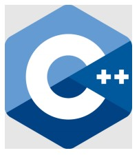
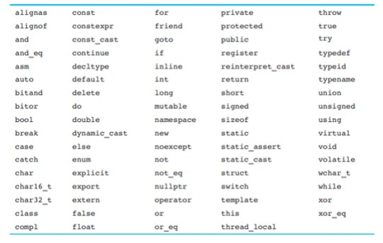

C++ merupakan bahasa pemrograman yang powerful yang sesuai untuk orang dengan sedikit atau tanpa pengalaman pemrograman. Oleh karena itu, di perkuliahan akan diajarkan bahasa pemrograman C++ pada tingkat awal. Jika ingin membuat sebuat software yang berhubungan dengan hardware maka dapat menggunakan bahasa pemrograman C++. Pada bahasa pemrograman C++, dapat dipelajari dasar - dasar dari pemrograman seperti variabel, tipe data, dan lain - lain. Maka dari itu C++ merupakan bahasa pemrograman yang merupakan hasil perkembangan dari bahasa C. C++ memiliki class, pointer, dan sebagainya yang tidak ada di bahasa pemrograman C. C++ merupakan bahasa pemrograman yang multiplatform.
Pendahuluan
Sejarah
C++ merupakan bahasa pengembangan dari bahasa C. C++ dibuat oleh Bjarne Stroustrup pada tahun 1983. C++ mendukung object oriented programming atau OOP. Awalnya C++ mempunyai nama C with classes dan kemudian berganti nama menjadi C++ pada tahun 1983. Pada tahun 1998, C++ memiliki standar internasional C++ 98. Meskipun bahasa ini termasuk yang sudah cukup tua namun terus direvisi hingga versi terbarunya pada tahun 2020 yaitu C++ 20
Cara Kerja
Program yang dibuat dalam text editor disebut dengan source code. Pada C++, source code terdiri dari 2 file yaitu file program (.cpp) serta file header (.h). Source code kemudian memasuki tahap COMPILE sehingga dapat dimengerti oleh bahasa mesin atau Machine Language dan menghasilkan sebuah file dengan ekstensi .obj. Setelah dicompile, proses selanjutnya adalah LINKER. Pada tahap ini, file berekstensi .obj akan digabungkan dengan file lain seperti library eksternal dan file object lain, sehingga akan menghasilkan sebuah file berekstensi .exe yang dapat digunakan di multiplatform. Untuk dapat membuat program C++, dapat menggunakan sublime text sebagai salah satu contoh text editor dan MinGW sebagai compiler. Jika ingin menggunakan aplikasi yang didalamnya sudah terdapat text editor dan compiler dapat menggunakan IDE (Integrated Development Environment).
Integrated Development Environment
IDE (Integrated Development Environment) merupakan aplikasi perangkat lunak yang memberikan fasilitas secara lengkap untuk proses pengembangan software
IDE biasanya mempunyai fasilitas dasar seperti :
- Editor
- Compiler
- Debugger
Terdapat banyak IDE yang dapat digunakan seperti :
- Intellij IDEA
- NetBeans
- Eclipse
- CodeBlocks
Variabel
Variabel adalah nama yang diasosiasikan dengan data yang disimpan dalam memori. Variabel dibuat untuk menyimpan suatu data yang nantinya akan dirujuk. Untuk membuat variabel, diharuskan untuk mendefinisikannya dengan menulis tipe data yang disimpan dan nama variabel tersebut.
Bentuk umum :
tipe nama;
- tipe : Menunjukkan tipe data.
- nama : Menunjukkan nama variabel.
Contoh penggunaan dari pendeklarasian variabel adalah sebagai berikut :
int counter; /*untuk menyimpan bilangan integer*/
char ch; /*untuk menyimpan karakter tunggal*/
Ketika program mengeksekusi statement pendefinisian variabel, program mengalokasikan memori sebesar dari tipe data dan mereferensikan alamat memori yang dialokasikan ke nama variabel.
Setelah didefinisikan, selanjutnya dapat menugaskan variabel tersebut dengan nilai yang sesuai dengan tipe data dari variabel tersebut
Contoh penugasan variabel adalah sebagai berikut :
int counter;
counter = 0;
/*penugasan juga dapat dilakukan dalam 1 baris*/
int counter = 0;
Nama yang dapat kita gunakan sebagai nama variabel harus mengikuti ketentuan penamaan identifier (pengidentifikasi). Identifier adalah nama yang ditentukan programmer untuk beberapa elemen-elemen program seperti : variabel, fungsi, class, dan sebagainya.
Ketentuan penamaan identifier dalam C++:
- Karakter pertama harus berupa huruf besar A s.d Z, huruf kecil a s.d z, atau berupa karakter underscore _.
- Karakter setelah karakter pertama dapat berupa huruf besar A s.d Z, huruf kecil a s.d z, angka 0 s.d 9, atau underscore.
- Huruf besar dan huruf kecil membedakan. Ini berarti ItemsOrdered tidak sama dengan itemsordered .
- Tidak menggunakan keyword (nama-nama yang sudah dicadangkan dan mempunyai arti tertentu dalam Bahasa C++).
Keyword yang tidak dapat digunakan sebagai nama identifier dalam C++ adalah sebagai berikut :
Meskipun dapat menggunakan nama apapun untuk variabel sepanjang mengikuti ketentuan penamaan identifier, programmer C++ umumnya mengikuti konvensi berikut untuk penamaan variable:
- Huruf pertama berupa huruf kecil: item, jumlah.
- Jika nama variabel terdiri dari lebih dari satu suku kata, suku kata kedua dan seterusnya dikapitalisasi: hariLibur, jarakTahunCahaya
Contoh-contoh penamaan variabel yang valid dan tidak valid adalah sebagai berikut :
| Variabel | Valid atau Tidak Valid? |
| dayOfWeek | Valid. |
| 3dGraph | Tidak Valid. Nama variabel tidak boleh dimulai dengan angka. |
| _employee_num | Valid. |
| June1998 | Valid. |
| Mixture#3 | Tidak Valid. Nama variabel hanya boleh menggunakan huruf, angka, atau underscore. |
Berikut adalah contoh program inisialisasi variabel :
#include<*iostream>
using namespace std;
int main()
{
int bulan = 2;
int hari = 28;
cout << "Bulan " << bulan << " mempunyai " << hari << " hari.\n";
return 0;
}
Output :
Bulan 2 mempunya 28 hari.